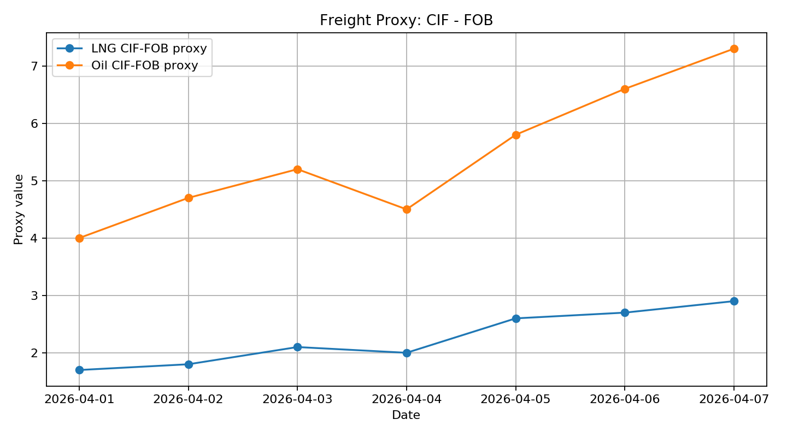
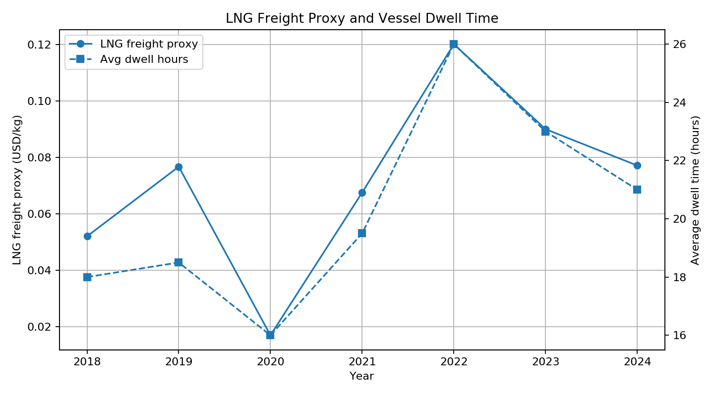

Commodity Flow connects market signals, shipping flows, and industrial structures.
Request a DiscussionCommodities
LNG and oil behave differently under structural constraints.
Shipping
Ports compete as nodes in networks, not isolated assets.
Selected indicators derived from trade and vessel-side dynamics.

